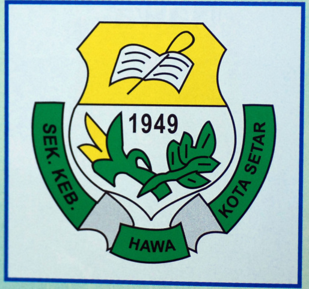

THIS IS MY EDUCATION JOURNEY
TABIKA KEMAS NAWA
- 2010
- Top Student
- Tambourine Player
SEKOLAH KEBANGSAAN NAWA
- 2011-2016
- Prefect-Treasurer
- Gamelan Group
- Tunas Kadet Remaja Sekolah-Treasurer
- Handball Main Player
- Volleyball Player
- UPSR-3A 3B
SEKOLAH MENENGAH KEBANGSAAN AGAMA KEDAH
- 2017-2021
- Robotic Club-Treasurer
- Pergerakan Puteri Islam- Active Member
- Silat Club-Vice President
- PT3-8A 4B
- SPM-7A 3B 1D
UNIVERSITI TEKNOLOGY MARA MERBOK KEDAH
- 2022-Now
- Head of Food Bureau-Dari Klik Ke Pemahaman OutReach Program
- GPA-3.63
- CGPA-3.2
EXPERIENCES
I did a 2 month intership at Sultanah Bahiyah Hospital at Medical Records Department.
I learned how to handle semi-record of their patients in the hospital.
I feel this is a valuable experience where I can see the process and
workflow of how and how long patient records are stored and distored.
I also used to do part-time work packing album parcels and novels.
I also feel that this work can build discipline and focus.
